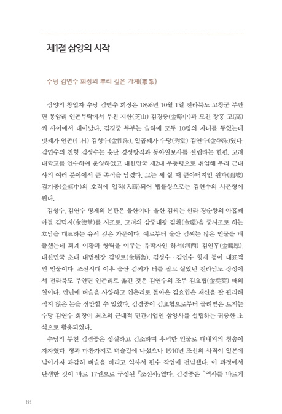
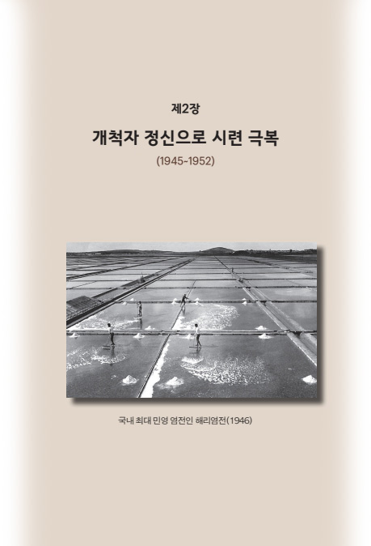
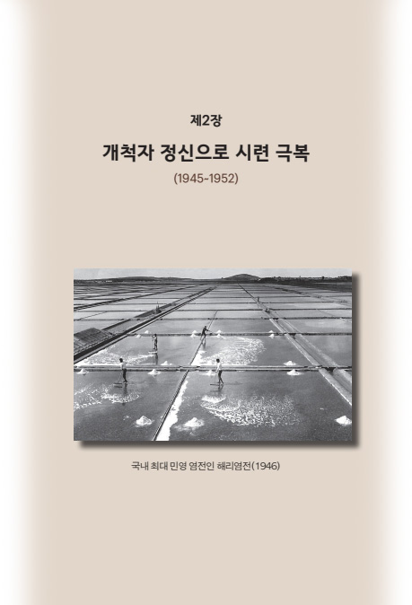
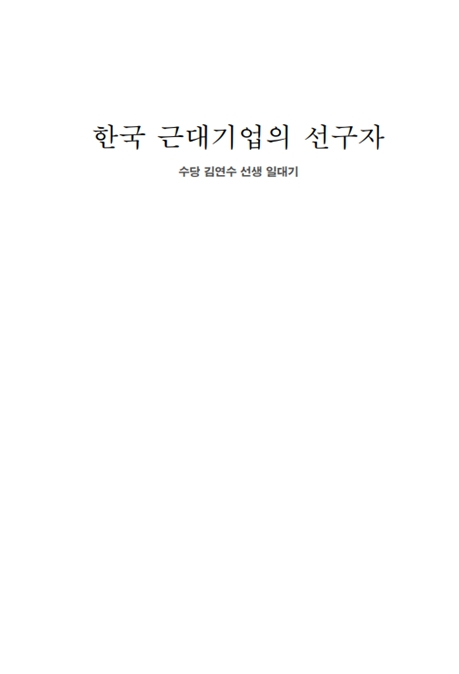
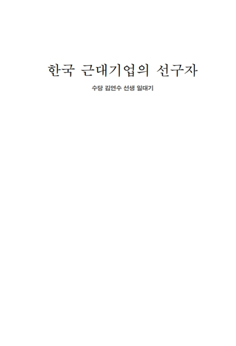

삼양홀딩스소개
삼양그룹은 2011년 11월 지주회사 체제 출범 이후
화학, 식품, 의약바이오, 패키징 사업을 핵심 성장축으로 변화와 혁신을 추진 중입니다.
삼양홀딩스는 각 사업군별 특성에 따라 신속하고 전문적인 의사결정이 가능한
지배구조 체제를 확립하고 경쟁력을 높여 전문화된 사업영역에 기업의 역량을 집중하고 있습니다.
- “Life’s Ingredients.”
- 삼양의 Vision은 ‘생활을 풍요롭고 편리하게 하는 기업’ 입니다.
이를 위해 삼양은 선택과 집중으로 기존 사업의 포트폴리오를 고도화 하고, 국내외 신시장을 개척하며, 고부가 제품 확대 및 차별화된 R&D 역량을 바탕으로 미래 성장 동력을 확보해 나가겠습니다.
이를 통해서 글로벌 R&D 혁신 기업으로 더욱 높이 도약하고자 합니다.
삼양은 Vision 달성을 위해 ‘신뢰’, ‘도전’, ‘혁신’, ‘인재’와 더불어 새로운 성장에 필요한 ‘고객중심’, ‘성과중심’의 가치를 포함하는 기업문화 Transformation도 추진하고 있습니다.
삼양은 이를 바탕으로 임직원들에게는 더 보람찬 일터가 되고, 고객에게는 우수한 제품과 서비스로 더 큰 만족을 주며, 주주에게는 더 높은 수익을 제공하는 글로벌 기업이 되도록 노력할 것입니다.
삼양 창업자와 창업정신
“분수를 지켜 복을 기르고(安分以養福),
마음을 너그럽게 하여 기를 기르며(寬胃以養氣),
낭비를 삼가하여 재산을 기른다(省費以養財)”
수당 김연수 회장은 19세기 말에 태어나 일제 강점기, 6,25전쟁, 4.19.와 5.16,
경제 근대화의 시대에 살아 오면서 정치, 사회적 격동의 한가운데서
1924년 삼양사를 창업하여 한국 근대 기업사의 큰 이정표를 세웠습니다.
READ MORE
-
삼양90년사 (1924~2010)
 
In this nightmare vision of cats in revolt, fifteen-year-old Alex and his friends set out on a diabolical orgy of robbery, rape, torture and murder. Alex is jailed for his teenage delinquency and the State tries to reform him - but at what cost?
삼양90년사 -
수당 김연수 회장 일대기 한국 근대기업의 선구자
 
Tyrant, blackmailer, racketeer, murderer - his influence reaches every level of American society. Meet Cat Corleone, a friendly cat, a just cat, a reasonable cat. The deadliest lord of the Cata Nostra. The Catfather.
한국 근대기업의 선구자 -
늘 한결같은 마음으로
Holden Catfield is a seventeen-year-old dropout who has just been kicked out of his fourth school. Navigating his way through the challenges of growing up, Holden dissects the 'phony' aspects of society.
늘 한결같은 마음으로